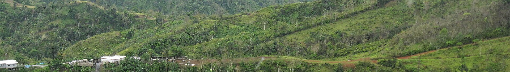
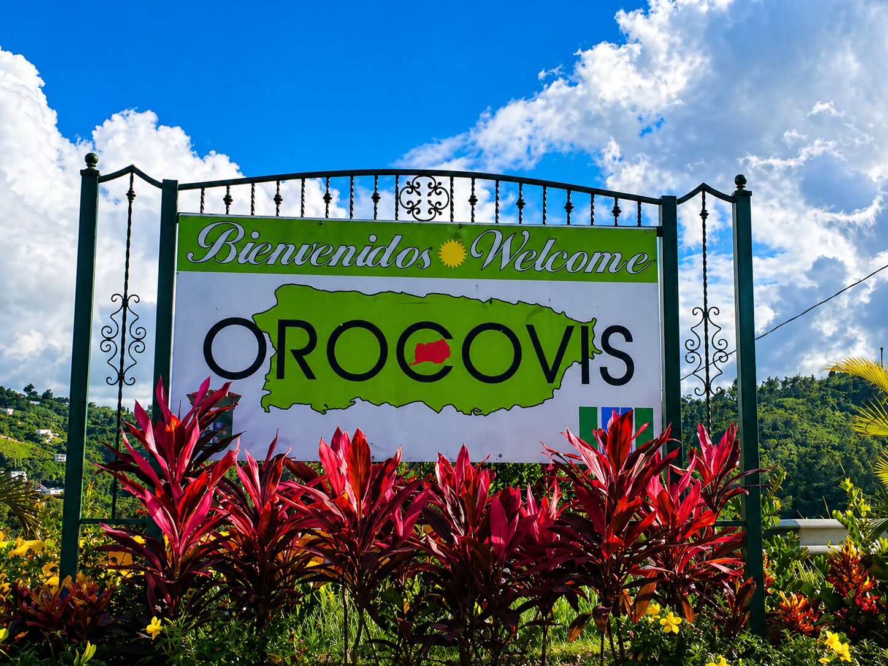
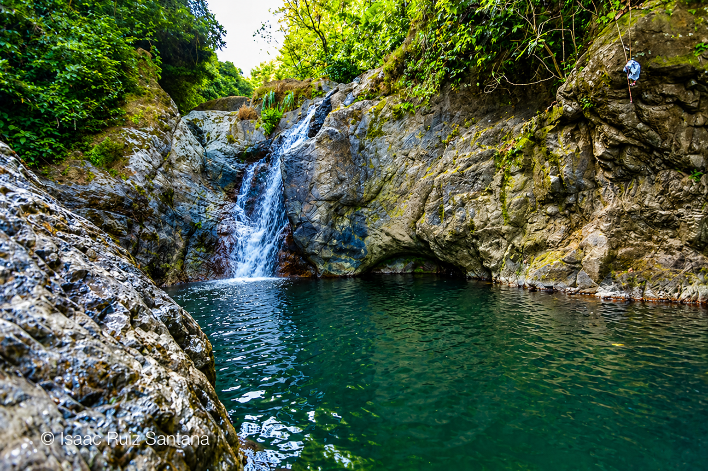
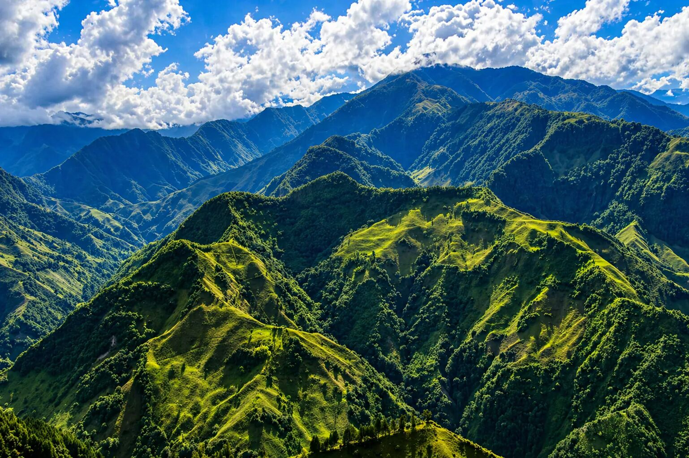

Multimedia
Esta sección reúne fotos, video y audio para presentar el ambiente de Orocovis.
Video
Audio
Ambiente sonoro local para acompañar la galería del proyecto.
Galería

Bienvenida

Chorro de Doña Juana

Mirador

Cordillera Central